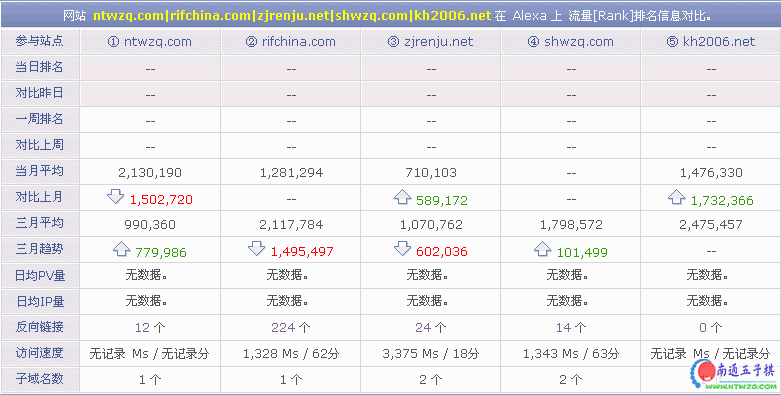

南通五子棋网站排名第一了！
#1 <font color="green">南通五子棋网站排名第一了！</font> 作者：有志青年 发表时间：2006-9-3 22:46:24
网站 www.
网站 www.
网站 www.
网站 www.
网站 www.
刚刚查阅的排名，不知啥时候南通五子棋能排到100,000之内去，呵呵，到时候，请大家吃饭。
#2 Re:南通五子棋网站排名第一了！ 作者：有志青年 发表时间：2006-9-3 22:49:11
#3 Re:南通五子棋网站排名第一了！ 作者：酒鬼 发表时间：2006-9-3 23:13:32
祝贺！#4 Re:南通五子棋网站排名第一了！ 作者：ベ☆ve寶々 发表时间：2006-9-4 6:10:58
哦...呵呵~~~
可喜可贺... 继续努力~~
#5 Re:南通五子棋网站排名第一了！ 作者：幽若 发表时间：2006-9-4 7:47:25
有志好牛哦，继续努力哈#6 Re:南通五子棋网站排名第一了！ 作者：孤竹 发表时间：2006-9-4 7:49:31
恭喜,恭喜,祝贺南通五子棋网站!!#7 Re:南通五子棋网站排名第一了！ 作者：xr__ 发表时间：2006-9-4 17:14:50
恭喜,恭喜,祝贺南通五子棋网站!!#8 Re:南通五子棋网站排名第一了！ 作者：春风 发表时间：2006-9-5 20:13:20
 恭喜~~
恭喜~~
#9 Re:南通五子棋网站排名第一了！ 作者：日出333 发表时间：2006-9-5 21:54:25
祝贺！#10 Re:南通五子棋网站排名第一了！ 作者：听雨练棋 发表时间：2006-9-6 15:43:51
 支持ing!
支持ing!
#11 Re:南通五子棋网站排名第一了！ 作者：张月菡 发表时间：2006-9-6 17:45:25
gongxi#12 Re:南通五子棋网站排名第一了！ 作者：张月菡 发表时间：2006-9-6 17:45:55
恭喜!#13 Re:南通五子棋网站排名第一了！ 作者：yidefei 发表时间：2006-9-6 20:24:24
众望所归！
#14 Re:南通五子棋网站排名第一了！ 作者：洒受 发表时间：2006-9-7 19:13:32

#15 Re:南通五子棋网站排名第一了！ 作者：裁决殿★茜茜 发表时间：2006-11-4 20:55:06
恭喜,祝贺南通五子棋网站！！！#16 Re:南通五子棋网站排名第一了！ 作者：gerbo 发表时间：2006-11-7 22:02:48
希望你吸引更过得人来南通网站，来发表自己的观点和文章，在这一起学习一起长大
但我也想说说个人的看法，南通确实办的很好，但就是感觉内容更新的慢了以及更多更好的文章，这离不开大家的帮忙，我作为一个五子棋爱好者，希望能聚集大家的力量，把南通办的有声有色
#17 Re:南通五子棋网站排名第一了！ 作者：南通小小包 发表时间：2006-11-8 1:40:41


#18 Re:南通五子棋网站排名第一了！ 作者：江风 发表时间：2006-11-11 10:58:46

#19 Re:南通五子棋网站排名第一了！ 作者：不速之鱼 发表时间：2006-11-13 13:07:41
期待着楼主请吃饭的那天！
#20 Re:南通五子棋网站排名第一了！ 作者：逆刃 发表时间：2007-4-14 14:44:39
这在我的意料之中啊，我就最喜欢南通五子棋网站了。因为它不仅信息及时而且很全，关于五子棋的东西基本上都有，而其它网站只有极少数，特别是一些好的棋谱和好的软件，在其它网站上是没有的，就算有也不这样，还要收费，我觉得在这个方面南通网站做得很好啊！感谢有志了！#21 Re:南通五子棋网站排名第一了！ 作者：恋黑 发表时间：2007-6-15 13:03:50
南通人的魅力就是说到做到，第一！！！！！！！！！！！！#22 Re:南通五子棋网站排名第一了！ 作者：天上掉个馅饼 发表时间：2007-12-19 14:29:41
先提前祝贺#23 Re:南通五子棋网站排名第一了！ 作者：刀魂 发表时间：2009-3-7 22:58:19
恭喜 恭喜，红包拿来#24 Re:南通五子棋网站排名第一了！ 作者：疏星淡月 发表时间：2009-3-14 1:17:23
呵呵，慢慢来吧#25 Re:南通五子棋网站排名第一了！ 作者：雅典娜 发表时间：2009-3-14 8:38:29
恭喜 恭喜,爱五子 排第一才好呢!